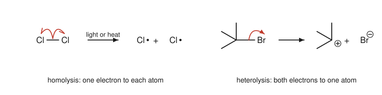
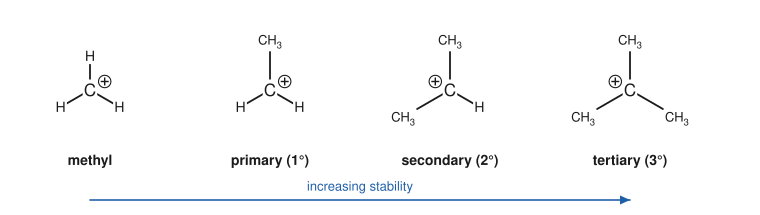
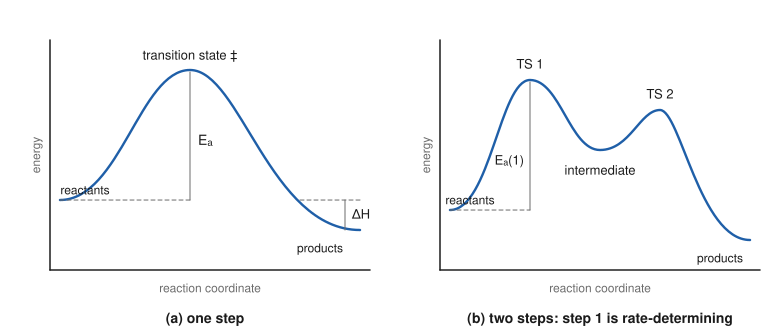

Chapter 5: Reaction Mechanisms and Curly Arrows¶
How and why bonds break and form
A balanced equation tells you what goes in and what comes out. A mechanism tells you how: which bonds break, which form, in what order, and through which short-lived species. Mechanisms are the grammar of organic chemistry. Once you can read and write them, the hundreds of reactions in this book reduce to a handful of patterns, and you can predict the products of reactions you have never met. This chapter introduces the language of mechanisms (nucleophiles, electrophiles and curly arrows), the reactive intermediates that appear in them, and the energy ideas that decide whether and how fast a reaction goes.
Learning outcomes
By the end of this chapter you should be able to:
- distinguish homolytic and heterolytic bond cleavage and draw full and fish-hook arrows correctly;
- identify nucleophiles and electrophiles and the atoms through which they react;
- draw curly arrows following the rules, and check every structure for correct charges;
- recognise the four basic arrow patterns of polar mechanisms;
- rank the stability of carbocations, carbanions and radicals and explain the order;
- read a reaction energy profile, distinguishing transition states, intermediates and the rate-determining step;
- classify reactions as additions, eliminations, substitutions or rearrangements, and as oxidations or reductions.
5.1 What a mechanism is¶
A mechanism is a step-by-step description of a reaction at the level of electrons. Each step shows bonds breaking and forming, and the structures between steps are real species, however short-lived. A mechanism is a theory: it is proposed to explain the experimental facts (the products, the effect of changing the reactants, the rate, the stereochemistry) and it is accepted when it explains them all.
Why bother? Because a mechanism is transferable. Learn how hydroxide reacts with bromomethane and you know how cyanide reacts with iodoethane, how water reacts with a tertiary bromide (by a different route, for reasons you will understand) and how an amine attacks an alkyl halide in a drug synthesis.
5.2 Breaking bonds: homolysis and heterolysis¶
A covalent bond holds two electrons. When it breaks, those electrons can be shared out in two ways.
- In homolysis (homolytic cleavage) each atom takes one electron. The products are radicals, species with an unpaired electron, written with a dot: Cl•. Homolysis usually needs light or heat, and happens most easily for weak, non-polar bonds such as Cl–Cl, Br–Br and O–O.
- In heterolysis (heterolytic cleavage) one atom takes both electrons. The products are a cation and an anion. Heterolysis is favoured for polar bonds in polar solvents, where the ions are stabilised.
The movement of a pair of electrons is drawn with a full-headed curly arrow. The movement of a single electron is drawn with a fish-hook arrow (half-headed).

Most reactions in this book are polar reactions, in which bonds break and form heterolytically and electron pairs move from electron-rich to electron-poor sites. Radical reactions, such as the chlorination of alkanes (Chapter 6) and many polymerisations (Chapter 15), form a second group. A third group, pericyclic reactions, in which bonds reorganise in a single cyclic step, is beyond a first course, apart from a mention in Chapter 7.
5.3 Nucleophiles and electrophiles¶
Polar reactions happen between an electron-rich species and an electron-poor one.
A nucleophile ("nucleus-loving") is a species with a pair of electrons that it can donate to form a new bond. It is a Lewis base. Nucleophiles have:
- a lone pair, often on a negatively charged atom: HO⁻, CH₃O⁻, CN⁻, Br⁻, I⁻, or on a neutral atom: H₂O, NH₃, CH₃OH;
- or a π bond: alkenes, alkynes and benzene rings donate their π electrons;
- or, more rarely, a polarised σ bond, as in the C–Mg bond of a Grignard reagent or the B–H bond of borohydride (Chapter 11).
An electrophile ("electron-loving") is a species that can accept a pair of electrons to form a new bond. It is a Lewis acid. Electrophiles have:
- an empty orbital: H⁺, carbocations, BF₃, AlCl₃;
- or an atom made δ+ by a polar bond, usually with a group that can leave: the carbon of C–Br in a haloalkane, the carbon of C=O in a carbonyl group, the hydrogen of H–Br.
Key idea
Almost every polar reaction step is a nucleophile giving a pair of electrons to an electrophile. When you meet a new reaction, first find the nucleophile (where are the most available electrons?) and the electrophile (where is the electron-poor atom?). The first curly arrow runs from one to the other.
The same species can be described as a base or a nucleophile depending on what it attacks. Hydroxide acting on a proton is a base; hydroxide acting on a carbon is a nucleophile. Basicity is a thermodynamic property (the position of an equilibrium with H⁺, measured by pKa), while nucleophilicity is a kinetic one (how fast the species attacks carbon). They usually run in parallel, but not always: iodide is a very weak base yet a good nucleophile, and the bulky tert-butoxide ion is a strong base but a poor nucleophile. These differences matter in Chapter 9.
5.4 The rules for curly arrows¶
A curly arrow shows the movement of one pair of electrons. Follow these rules and your mechanisms will be correct in form, even before they are correct in chemistry:
- The tail starts at the electrons: a lone pair, a negative charge or a bond (σ or π). Never start an arrow at an atom with no lone pair, at a positive charge, or at a hydrogen atom.
- The head points to where the electrons go: to an atom (to become a lone pair) or to the space between two atoms (to become a new bond).
- Arrows run from nucleophile to electrophile, from electron-rich to electron-poor.
- Atoms never exceed their limits. If an arrow brings a new bond to an atom that already has a full octet (such as carbon with four bonds), another arrow must take a pair of electrons away from that atom in the same step.
- Charge is conserved. The total charge on each side of every step must be the same.
- Check formal charges after every step. An atom that gains a bond by donating a lone pair becomes more positive; an atom that receives a lone pair by losing a bond becomes more negative.
Caution: the commonest arrow errors
- Drawing an arrow from an H⁺ to a lone pair ("the proton attacks"). The arrow goes the other way: from the lone pair to the H.
- Making a five-bonded carbon. If a nucleophile adds to a saturated carbon, a bond to that carbon must break at the same time.
- Losing track of charges: a neutral water molecule that uses a lone pair to form a bond becomes H₂O⁺–R, a positively charged oxonium ion.
5.5 The four basic patterns¶
Polar mechanisms are built from a small set of steps. Learn to recognise these four and you can read almost any mechanism in the book.
- Loss of a leaving group. A polar bond breaks heterolytically and the electronegative atom leaves with the electron pair. A good leaving group is a stable, weakly basic species: Br⁻, I⁻, Cl⁻, H₂O, a sulfonate ion.
- Nucleophilic attack. A nucleophile donates a pair of electrons to an electrophilic atom, forming a new bond.
- Proton transfer. A base removes a proton (Chapter 4). Proton transfers often start or finish a sequence, to make a better leaving group or to neutralise a charged product.
- A π bond attacks an electrophile. The π electrons of an alkene or arene form a new σ bond to an electrophile, leaving a positive charge on the other carbon.
A fifth pattern, rearrangement, moves a group from one atom to a neighbour, usually to turn a carbocation into a more stable one (Section 5.6).
Several patterns can happen together in one step. In the SN2 reaction of Chapter 9, nucleophilic attack and loss of the leaving group occur simultaneously: one arrow from the nucleophile to the carbon, and one from the C–leaving group bond to the leaving group.
Example 5.1: Reading a mechanism
The reaction of 2-bromo-2-methylpropane with water gives 2-methylpropan-2-ol and HBr. The mechanism in Figure 5.2 (a), (b), (c) has three steps.
Step 1. The C–Br bond breaks heterolytically. Bromine, more electronegative, leaves as Br⁻; carbon, which has lost a bond and its share of the electrons, becomes a carbocation, (CH₃)₃C⁺. Charges: 0 → (+1) + (−1). Balanced.
Step 2. Water is the nucleophile (lone pair on O); the carbocation is the electrophile (empty p orbital). The arrow runs from the oxygen lone pair to the carbon. Oxygen now has three bonds and one lone pair, so it carries a +1 formal charge: (CH₃)₃C–OH₂⁺.
Step 3. A second water molecule acts as a base. Its lone pair takes a proton from the oxonium ion, and the O–H bonding pair returns to the oxygen, which becomes neutral. Products: (CH₃)₃COH and H₃O⁺.
Overall: (CH₃)₃CBr + 2 H₂O → (CH₃)₃COH + H₃O⁺ + Br⁻, which is the stated equation with the HBr ionised in water.
5.6 Reactive intermediates¶
Many reactions pass through species that are too reactive to be isolated under normal conditions but live long enough to take part in later steps. These reactive intermediates are local energy minima on the path from reactants to products.
Carbocations¶
A carbocation has a carbon with only three bonds and six valence electrons, carrying a positive charge. The carbon is sp² hybridised and trigonal planar, with an empty p orbital perpendicular to the plane. Carbocations are strong electrophiles.
Their stability increases with the number of alkyl groups attached to the positive carbon:

Two effects explain the order. Alkyl groups are weakly electron-donating by the inductive effect. More importantly, the electrons of C–H (and C–C) σ bonds on neighbouring carbons can overlap with the empty p orbital and spread the charge. This delocalisation of σ electrons is called hyperconjugation; the more neighbouring C–H bonds there are, the greater the stabilisation.
Resonance is even more powerful. A carbocation next to a C=C double bond (an allylic cation, CH₂=CH–CH₂⁺) or next to a benzene ring (a benzylic cation, C₆H₅CH₂⁺) shares its charge over several carbons. Even a primary allylic or benzylic cation is about as stable as a simple secondary cation. A neighbouring atom with a lone pair (O or N) stabilises a carbocation strongly by resonance as well: CH₃O–CH₂⁺ ↔ CH₃O⁺=CH₂.
Because they are so eager to become more stable, carbocations can rearrange. A hydrogen (with its bonding pair, a hydride shift) or an alkyl group (a methyl shift) moves from a neighbouring carbon to the positive carbon, if this converts a less stable cation into a more stable one: for example, a secondary cation next to a tertiary carbon becomes a tertiary cation. Rearrangements explain some unexpected products in Chapters 7, 9 and 10.
Carbanions¶
A carbanion has a carbon with three bonds and a lone pair, carrying a negative charge. Carbanions are strong bases and strong nucleophiles. Their stability follows the opposite order to carbocations, because alkyl groups donate electrons and destabilise a negative charge: methyl > primary > secondary > tertiary. Like other anions, carbanions are stabilised by resonance (as in the enolate ions of Chapter 11, where the charge is shared with a carbonyl oxygen), by electronegative groups nearby and by greater s character (the ethynide ion, HC≡C⁻).
Radicals¶
A carbon radical has three bonds and one unpaired electron, seven valence electrons in all. It is neutral but very reactive, because it needs one more electron to complete its octet. Radical stability follows the same order as carbocation stability, for similar reasons: tertiary > secondary > primary > methyl, with allylic and benzylic radicals stabilised further by resonance. This order explains why radical bromination prefers tertiary C–H bonds (Chapter 6).
| Intermediate | Electrons on carbon | Charge | Shape | Stabilised by |
|---|---|---|---|---|
| carbocation | 6 | + | trigonal planar (sp²) | alkyl groups, resonance, adjacent lone pairs |
| radical | 7 | 0 | nearly planar | alkyl groups, resonance |
| carbanion | 8 | − | pyramidal (sp³) unless conjugated | resonance, electronegative groups, s character |
Table 5.1. The three carbon-centred reactive intermediates.
5.7 Energy: will it go, and how fast?¶
Two separate questions decide the outcome of a reaction. Thermodynamics asks whether the products are more stable than the reactants: where does the equilibrium lie? Kinetics asks how fast equilibrium is reached. A reaction can be strongly favourable yet immeasurably slow; a mixture of methane and air can stand for years at room temperature until a spark supplies the energy to start it.
Thermodynamics¶
The position of an equilibrium is set by the standard Gibbs energy change, \(\Delta G^\circ\):
A negative \(\Delta G^\circ\) means that products are favoured (\(K > 1\)). At 298 K, every 5.7 kJ mol⁻¹ of \(\Delta G^\circ\) changes \(K\) by a factor of ten. In many organic reactions the entropy term is small and \(\Delta H\) gives a good guide. Bond energies let you estimate \(\Delta H\): add the energies of the bonds broken and subtract those of the bonds formed.
Example 5.2: Estimating ΔH from bond energies
For CH₄ + Cl₂ → CH₃Cl + HCl, using bond dissociation energies (kJ mol⁻¹): C–H in methane 439, Cl–Cl 242, C–Cl in CH₃Cl 350, H–Cl 431.
Bonds broken: 439 + 242 = 681. Bonds formed: 350 + 431 = 781.
ΔH = 681 − 781 = −100 kJ mol⁻¹. The reaction is strongly exothermic; yet methane and chlorine do not react in the dark at room temperature, because the first step (breaking a bond) has a high energy barrier. Light provides the energy to split Cl₂ into radicals and start the reaction (Chapter 6).
Kinetics and energy profiles¶
A reaction energy profile plots energy against the reaction coordinate, a measure of how far the reaction has progressed. Reactants must pass over an energy barrier to become products. The top of the barrier is the transition state, marked ‡: the arrangement of highest energy along the path, in which old bonds are partly broken and new bonds partly formed. A transition state lasts no longer than a single molecular vibration and cannot be isolated. The height of the barrier from the reactants is the activation energy, \(E_\mathrm{a}\). The larger \(E_\mathrm{a}\), the slower the reaction.

In a reaction of several steps, an intermediate lies in a dip between two transition states. It is a real species with a finite lifetime, and it can sometimes be detected or trapped. The overall rate is controlled by the step with the highest transition state, the rate-determining step. Only the species involved up to and including that step appear in the rate equation, which is one of the main experimental tests of a mechanism.
Reaction rates increase with temperature, because a larger fraction of molecules then has enough energy to cross the barrier; as a rough rule of thumb, many reactions near room temperature go about two to three times faster for a 10 °C rise. A catalyst speeds up a reaction by providing a different path with a lower activation energy. It is not consumed, and it does not change the position of the equilibrium: it speeds up the forward and reverse reactions equally.
The Hammond postulate links the two kinds of picture: a transition state resembles the species (reactant, intermediate or product) closest to it in energy. For an endothermic step that forms a carbocation, the transition state resembles the carbocation, so anything that stabilises the carbocation also lowers the barrier. This is why reactions that pass through more stable carbocations are faster.
5.8 Kinds of reaction¶
Most organic reactions belong to one of four types:
- Addition: two reactants combine into one product. Alkenes add HBr: CH₂=CH₂ + HBr → CH₃CH₂Br (Chapter 7). Carbonyl groups add nucleophiles (Chapter 11).
- Elimination: one reactant splits into two products, usually forming a π bond. Bromoethane loses HBr with a strong base to form ethene (Chapter 9). Elimination is the reverse of addition.
- Substitution: one group replaces another. Hydroxide replaces bromide: CH₃Br + OH⁻ → CH₃OH + Br⁻ (Chapter 9). Benzene undergoes substitution rather than addition (Chapter 8).
- Rearrangement: the atoms of one molecule reorganise into a constitutional isomer.
Oxidation and reduction in organic chemistry¶
In organic chemistry it is usually easier to judge oxidation and reduction by counting bonds than by electron transfer. A carbon is oxidised when it gains bonds to more electronegative atoms (O, N, halogens) or loses bonds to hydrogen; it is reduced when it gains bonds to hydrogen or loses bonds to electronegative atoms. The series
is a sequence of increasing oxidation of carbon: zero, one, two, three and four bonds to oxygen. The addition of H₂ to an alkene is a reduction; the conversion of an alcohol into a ketone is an oxidation (Chapter 10).
5.9 Summary¶
Summary
- A mechanism describes a reaction step by step in terms of electron movement.
- Homolysis gives radicals (fish-hook arrows); heterolysis gives ions (full arrows).
- Nucleophiles donate electron pairs (lone pairs, π bonds); electrophiles accept them (empty orbitals, δ+ atoms with leaving groups).
- A curly arrow moves one electron pair from its tail (lone pair or bond) to its head (atom or new bond). Never exceed an octet; conserve charge.
- Four basic patterns: loss of a leaving group, nucleophilic attack, proton transfer, and a π bond attacking an electrophile. Rearrangements are a fifth.
- Carbocation and radical stability: 3° > 2° > 1° > methyl, increased further by resonance (allylic, benzylic). Carbanions follow the reverse order.
- ΔG° decides the position of equilibrium; the activation energy decides the rate. Intermediates sit in energy wells; transition states sit at energy maxima. The highest barrier is the rate-determining step.
- Reactions are additions, eliminations, substitutions or rearrangements. Gaining bonds to O, N or halogen is oxidation; gaining bonds to H is reduction.
5.10 Exercises¶
Exercise 1
Classify each species as a nucleophile, an electrophile or both: (a) CN⁻; (b) H₃O⁺; (c) CH₃CH₂⁺; (d) NH₃; (e) BF₃; (f) CH₂=CH₂; (g) the carbon of CH₃–Br; (h) H₂O.
Answer
Nucleophiles: (a) CN⁻, (d) NH₃, (f) ethene (through its π bond). Electrophiles: (b) H₃O⁺ (delivers H⁺), (c) the carbocation, (e) BF₃, (g) the δ+ carbon of bromomethane. (h) Water is a nucleophile through its oxygen lone pairs and a weak electrophile (as an acid) through its hydrogens; in most reactions it acts as a nucleophile or a base.
Exercise 2
Find the error in each description and correct it. (a) "In the reaction of H–Cl with water, an arrow is drawn from H⁺ to the oxygen lone pair." (b) "Hydroxide adds to the carbon of bromomethane, giving a carbon with five bonds, which then loses bromide." (c) "Cl₂ splits in light: one curly arrow from the Cl–Cl bond to one chlorine."
Answer
(a) The arrow must start at the electrons: from the oxygen lone pair to the H, with a second arrow from the H–Cl bond to Cl. (b) Carbon cannot have five bonds. The C–Br bond breaks as the O–C bond forms, in a single step: one arrow from the hydroxide lone pair to the carbon, and one from the C–Br bond to Br. (c) Homolysis is shown with two fish-hook arrows, one from the bond to each chlorine. A single full arrow would describe heterolysis into Cl⁺ and Cl⁻.
Exercise 3
Draw the products and assign formal charges for each step: (a) the lone pair of ammonia attacks the carbon of the methyl cation, CH₃⁺; (b) the π bond of propene attacks H⁺ so that the new C–H bond forms at C1.
Answer
(a) CH₃–NH₃⁺: nitrogen now has four bonds and no lone pair, formal charge +1. Overall charge +1 is conserved.
(b) The π electrons form a C–H bond to C1, so C1 becomes CH₃ and C2 loses its share of the π pair: CH₃–C⁺H–CH₃, the propan-2-yl (isopropyl) cation, a secondary carbocation. Total charge +1 is conserved.
Exercise 4
Rank in order of increasing stability, and explain: (a) CH₃⁺, (CH₃)₂CH⁺, CH₃CH₂⁺, (CH₃)₃C⁺; (b) CH₃CH₂CH₂⁺ and CH₂=CHCH₂⁺.
Answer
(a) CH₃⁺ < CH₃CH₂⁺ < (CH₃)₂CH⁺ < (CH₃)₃C⁺. Each additional alkyl group stabilises the positive carbon by hyperconjugation and by its weak inductive donation.
(b) CH₃CH₂CH₂⁺ < CH₂=CHCH₂⁺. The allylic cation is stabilised by resonance: the charge is shared between C1 and C3 (CH₂=CH–CH₂⁺ ↔ ⁺CH₂–CH=CH₂).
Exercise 5
Use bond energies to estimate ΔH for the addition of HBr to ethene, CH₂=CH₂ + HBr → CH₃CH₂Br. Take: C=C 610, H–Br 366, C–C 350, C–H 410, C–Br 285 (all kJ mol⁻¹).
Answer
The C=C becomes C–C, and one C–H and one C–Br bond are formed, while H–Br is broken. Bonds broken: C=C (610) + H–Br (366) = 976. Bonds formed: C–C (350) + C–H (410) + C–Br (285) = 1045. ΔH ≈ 976 − 1045 = −69 kJ mol⁻¹. Additions to alkenes are usually exothermic, because a π bond and a σ bond are replaced by two stronger σ bonds.
Exercise 6
On an energy profile for a two-step reaction in which the second transition state is higher than the first: (a) which step is rate-determining? (b) Where is the intermediate? (c) If the overall reaction is exothermic, are the products above or below the reactants?
Answer
(a) The second step, because its transition state is the highest point on the profile. (b) In the energy well between the two transition states. (c) Below the reactants.
Exercise 7
Classify each change as oxidation, reduction or neither for the carbon shown in bold: (a) CH₃CH₂OH → CH₃CHO; (b) CH₂=CH₂ + H₂ → CH₃CH₃; (c) CH₃CH₂Br → CH₃CH₂OH; (d) CH₃COCH₃ → CH₃CH(OH)CH₃.
Answer
(a) Oxidation: the carbon loses a C–H bond and gains a second bond to oxygen. (b) Reduction: each carbon gains a bond to H. (c) Neither: one bond to an electronegative atom (Br) is replaced by another (O). (d) Reduction: the carbon gains a C–H bond and loses one of its two bonds to oxygen.
5.11 Quiz¶
Check your understanding of mechanisms
Exercise 1
A fish-hook (half-headed) arrow shows the movement of
- a pair of electrons
- a single electron
- a proton
- a whole atom
Answer
a single electron
Exercise 2
Which is NOT a nucleophile?
- CH₃O⁻
- NH₃
- BF₃
- CH₂=CH₂
Answer
BF₃
Exercise 3
The tail of a curly arrow must start at
- a positive charge
- a hydrogen atom
- a lone pair or a bond
- an empty orbital
Answer
a lone pair or a bond
Exercise 4
Which carbocation is the most stable?
- CH₃⁺
- CH₃CH₂⁺
- (CH₃)₂CH⁺
- (CH₃)₃C⁺
Answer
(CH₃)₃C⁺
Exercise 5
The rate-determining step of a multistep reaction is the step
- that comes first
- with the highest-energy transition state
- that releases the most energy
- that forms the products
Answer
with the highest-energy transition state
Exercise 6
A catalyst
- shifts the equilibrium towards products
- lowers the activation energy
- raises ΔG
- is used up in the reaction
Answer
lowers the activation energy
Exercise 7
Match each reaction to its type.
| A | B |
|---|---|
| CH₂=CH₂ + Br₂ → BrCH₂CH₂Br | substitution |
| CH₃CH₂Br + OH⁻ → CH₃CH₂OH + Br⁻ | elimination |
| CH₃CH₂Br → CH₂=CH₂ + HBr | addition |
Answer
CH₂=CH₂ + Br₂ → BrCH₂CH₂Br — addition; CH₃CH₂Br + OH⁻ → CH₃CH₂OH + Br⁻ — substitution; CH₃CH₂Br → CH₂=CH₂ + HBr — elimination